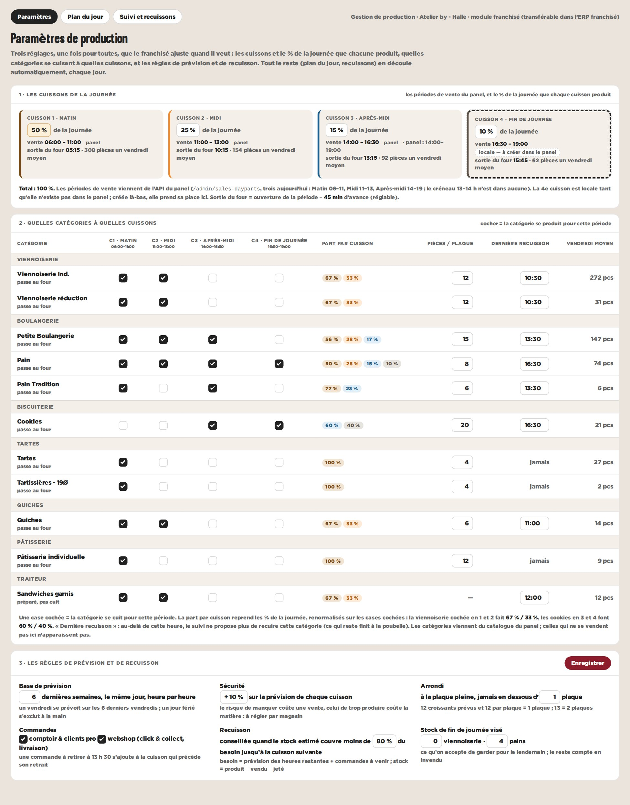
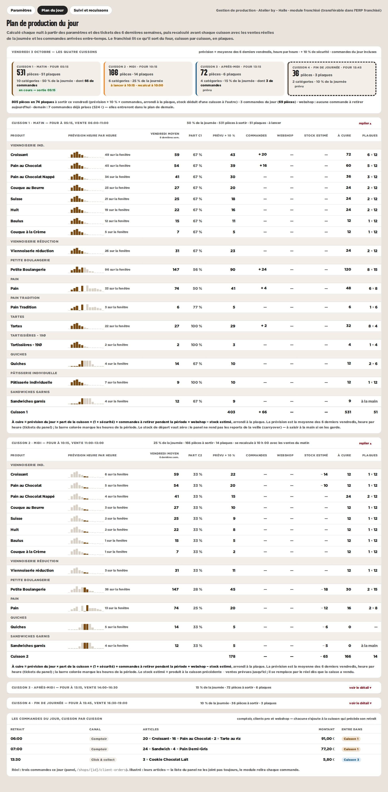
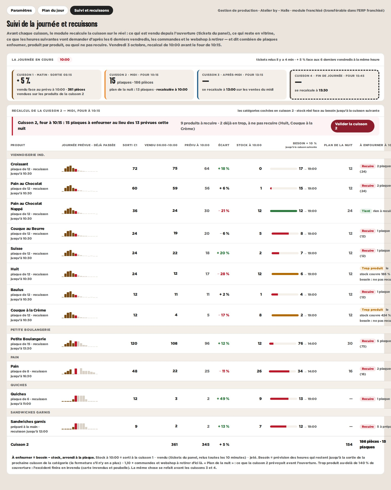

Un module à transférer côté franchisé : il règle une fois ses cuissons, ses catégories et ses règles ; chaque jour, le plan se calcule tout seul à partir des 6 dernières semaines heure par heure (tickets du panel), des commandes et du webshop, et se recalcule avant chaque cuisson avec les ventes réelles. Réel : Halle, septembre 2026 et les trois périodes de vente du panel. Illustré : la 4e cuisson, les plaques, les articles des commandes, les ventes du matin du suivi.
Les cuissons viennent des périodes de vente du panel (trois aujourd’hui), avec le % de la journée par cuisson (50 % à la première) ; la 4e est locale tant qu’elle n’existe pas dans le panel. La matrice catégories × cuissons dit où chaque catégorie se cuit (viennoiserie en 1 et 2, cookies en 3 et 4) et renormalise les parts. Les règles : 6 semaines de base, + 10 % de sécurité, l’arrondi à la plaque, le seuil de recuisson, les commandes.

Quatre tuiles, une par cuisson, avec l’heure de sortie du four et les pièces ; puis, cuisson par cuisson, le détail par produit : prévision heure par heure (les heures de la période en couleur), vendredi moyen, part de la cuisson, + 10 %, commandes et webshop à retirer pendant la période, stock estimé de la cuisson précédente, à cuire et plaques. Les commandes du jour en bas, rangées dans leur cuisson.

À 10 h 00, avant le four de la cuisson 2 : vendu depuis l’ouverture face au prévu à cette heure, stock en vitrine, besoin jusqu’à la prochaine cuisson de la catégorie (prévision + 10 % + commandes + webshop), et ce qu’il faut enfourner, produit par produit, face au plan de la nuit — recuire tant de plaques, tient, trop produit (ne pas recuire), trop tard. Le même recalcul avant les cuissons 3 et 4.
